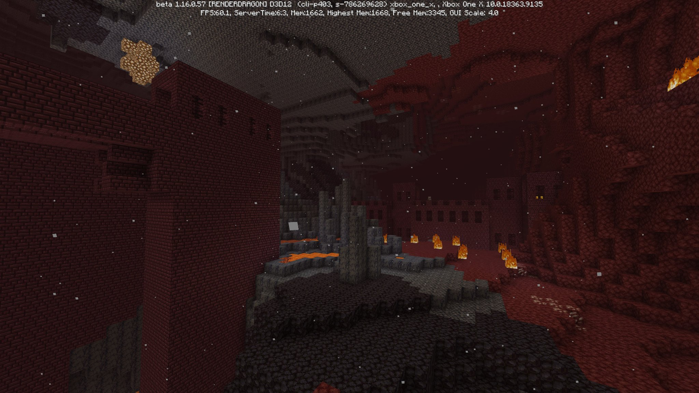
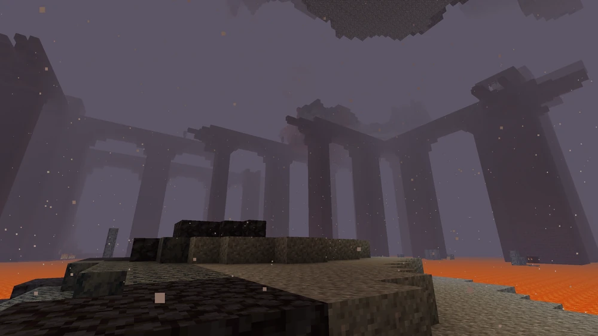
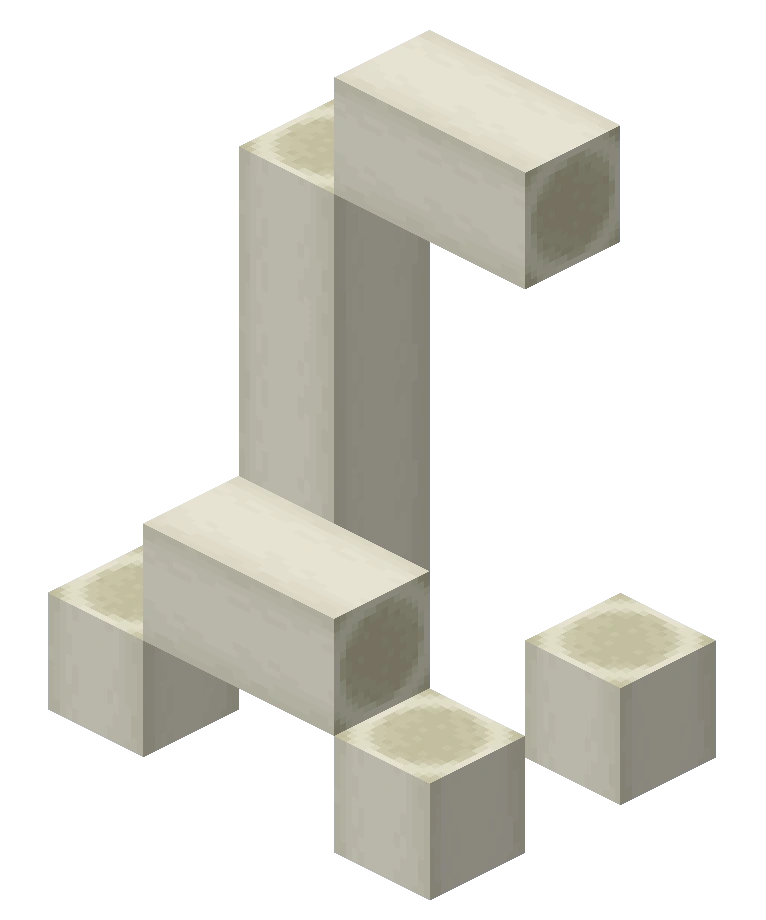
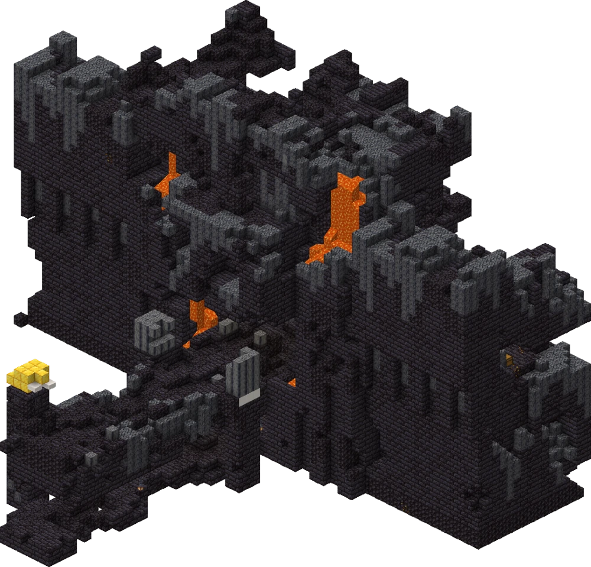
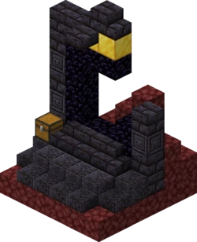

El Nether o Inframundo es una dimensión peligrosa que contiene fuego, lava, vegetación basada en hongos, muchas criaturas hostiles y estructuras exclusivas.
Para acceder al Nether, el jugador debe construir un portal del Nether en la dimensión Superficie (los portales creados en El End no se activan). Para crear el portal, el jugador primero debe construir un marco de obsidiana rectangular, que varía en tamaño desde un mínimo de 4×5 hasta un máximo de 23×23. Una vez que se construye el marco, se puede activar colocando fuego dentro del marco, usando un mechero, carga ígnea, dispensadores o cualquier material que sea capaz de encender el fuego.
El portal permite que la mayoría de las entidades (con la excepción del Wither, el Enderdragón y las entidades que viajan o son montadas por otra entidad) sean transportadas a un portal correspondiente en el Nether. En Supervivencia, el jugador debe permanecer en un portal del Nether durante 4 segundos para llegar al Nether. El jugador puede salir de un portal antes de que complete su animación para abortar el teletransporte. El portal genera un efecto de sonido mientras el jugador está dentro. Si no hay un portal correspondiente, se crea un nuevo portal 4×5. El portal se puede destruir rompiendo el marco de obsidiana, por una explosión cercana o colocando agua en la superficie o lava en él con un cubo o dispensador. Cualquiera de los bloques en las esquinas se puede destruir sin destruir el portal.
En el Viejo mundo, es imposible construir un portal del Nether. El bloque del portal debe colocarse mediante trampas. Cuando termine, el Nether tiene las mismas fronteras de 256×256 que la Superficie, y si se hace un portal del Nether en el Nether, puede generar al jugador fuera de la barrera del mundo.
El Nether no tiene ciclo de día y noche ni clima. Por lo demás, la luz funciona exactamente igual que en la Superficie y El End.
La mayor parte de la flora del Nether se basa en hongos en lugar de plantas. La "hierba" Nether consiste en micelio del Nether especializado (conocido como "necelio"). El Nether presenta sus propios hongos únicos (incluida las verrugas del Nether), así como hongos enormes equivalentes que sirven como árboles. Los tallos de los hongos enormes funcionan como troncos. También están presentes una serie de enredaderas y raíces autóctonas.
Las ubicaciones en el Nether se correlacionan con las coordenadas de la Superficie, pero las distancias horizontales de la Superficie se reducen en una proporción de 8:1 para viajar en el Nether. Por lo tanto, viajar un bloque en el Nether significa viajar ocho bloques en la Superficie. Por ejemplo, en un escenario perfecto, un jugador que ingresa a un portal en la Superficie en x=0, z=0 y viaja en el Nether a x=1000, z=1000 regresa a la Superficie en x=8000, z=8000. Esto hace que los portales sean una herramienta útil para viajar largas distancias en la Superficie.
La mayoría de los objetos y bloques en el Nether funcionan igual que en la Superficie, con algunas excepciones notables:

El Nether contiene una variedad de estructuras generadas únicas. Aunque igualmente vasto, contiene muchos menos tipos de estructuras generadas que la Superficie.
| Nombre | Descripción | Imagen |
|---|---|---|
| Fortaleza del nether |
Las fortalezas del Nether son estructuras grandes en forma de castillo que se componen de ladrillos del Nether. Esta estructura se encuentra a menudo tendiendo un puente sobre océanos de lava o haciendo túneles a través de la netherrack. Esta estructura es el único lugar donde se generan esqueletos del Wither y blazes, lo que convierte a las fortalezas en la puerta de entrada a ambos jefes del juego: el Enderdragón y el Wither. Las fortalezas también contienen generadores de blaze, así como pequeñas granjas de verrugas del Nether donde se pueden obtener verrugas del Nether. Se pueden encontrar fortalezas del Nether en todos los biomas del Nether. |
 |
| Islas Exteriores |
Las islas del extremo exterior se encuentran a 1000 cuadras de la isla central. Varían en tamaño desde islas grandes hasta "mini islas" más pequeñas. Las estructuras generadas, como las ciudades finales y los barcos finales, se generan aquí, junto con los coros . El jugador puede ser llevado a las islas del final a través de la puerta del final . |
 |
| Bastión en ruinas |
Los bastiones en ruinas son grandes fortificaciones formadas por piedra negra, ladrillos de piedra negra y basalto. Dentro de estas estructuras se pueden encontrar una gran cantidad de bloques de oro y cofres con botín. Se generan en cuatro variantes distintas, cada una con su propia estructura y botín únicos. Estas estructuras están habitadas por los piglins y los piglins brutos, y en ciertas variantes también por hoglins. Estas estructuras se generan dentro de cualquier bioma del Nether, excepto los deltas de basalto. |
 |
| Portal en ruinas |
Una estructura que contiene lo que parece ser un portal del Nether destruido y varios tipos de materiales de piedra o piedra negra, cuando se genera en la Superficie o el Nether, respectivamente. La netherrack se genera en el suelo alrededor del portal, y un cofre que contiene botín se genera con la estructura. Estas estructuras se pueden encontrar en cualquier bioma de la Superficie y el Nether. |
 |